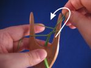

Minkälaista lankaa voin käyttää?
Erityisesti alussa on tärkeää, että lanka on sileää ja vedonkestävää. Itse opetan nro 8 helmilangalla, koska sitä sattuu olemaan iso pussi, mutta esimerkiksi virkkauslanka toimii hyvin. Uudelleenelävöittäjät käyttävät silkkiä, villaa ja pellavaa ja ne ovat kaikki ihan hyviä, jos valitsee sileän langan. Kun tekniikkasi paranee, voit käyttää karkeampaakin villaa, kunhan se kestää vetämistä. Huomaa, että hyvin löyhäkierteinen lanka saattaa jakautua ja aiheuttaa ongelmia. Muista materiaaleista esimerkiksi viskoosi toimii hyvin ja näyttää hyvältä, ja monia akryylilankojakin voi käyttää. Jos pidät nyörin löyhänä, voit kokeilla erikoislankoja kuten hapsulankaa. Minulla on tästä muutamia esimerkkejä blogissani.
Paljonko lankaa tarvitsen?
Langan menekkiä laskiessani käytän suhdetta 1:10. Esimerkiksi 25 metristä helmilankaa saa noin 2,5-2,7 metriä nyöriä. On kyllä mahdollista vaihtaa lankaa kesken nyörin, mutta jatkoskohtaan tulee aina jonkinlainen paksunnos, joten itse tarkistan aina ennen nyörin aloittamista, että lankaa on tarpeeksi.
Tarvitsenko useita nyörihaarukoita eripaksuisille langoille?
Isolla haarukalla voi punoa nyöriä kaiken paksuisista langoista, myös ohuista. Kriittinen mitta on piikkien kärkiväli, valmiin nyörin pitää mahtua piikkien väli. On myös eduksi, jos piikkien välissä on tilaa sormille lenkkiä nostettaessa.

Millainen nyörihaarukka olisi hyvä minulle?
Nyörihaarukan valinta on pitkälti makuasia. Itse pidän haarukasta, jossa on kahva, jonka leveys on noin 5 cm ja jossa on suorat piikit. Toisten mielestä on mukavampi käyttää haarukkaa, jossa on kaartuvat piikit eikä kahvaa. Jotkut pitävät pienistä nyörihaarukoista, joissa silmukka nostetaan nostopiikillä. Jos haluat nähdä eri näköisiä ja kokoisia nyörihaarukoita, käy kurkistamassa nyörihaarukkakokoelmaani, olen jakanut sen puisiin nyörihaarukoihin ja muista materiaaleista tehtyihin nyörihaarukoihin. Voit toki myös tehdä itse nyörihaarukan esimerkiksi puusta veistämällä tai 3D-tulostamalla.
Miksi nyörini on liian tiukka/löysä?
Nyörin kireyttä on helpompi säädellä, jos ensin vetää silmukkaa poispäin haarukasta (ei yläviistoon) siihen asti, että keskeltä on löysät pois ja sitten vasta nostaa silmukan piikin yli.
Uutta kierrosta aloitettaessa pitäisi keskellä olla löysä silmukka Tartu alempaan silmukkaan ja vedä sitä poispäin haarukasta, kunnes keskustan löysä silmukka kiristyy langan päälle Nosta alempi silmukka langan ja piikin yli.
 |
 |
 |
{kind=link}
Voit myös katsoa pienen videon, jossa teen kuten edellä on selostettu. Ensin poispäin haarukasta, sitten vasta yläviistoon.
En tahdo saada silmukasta otetta, mitä teen?
Nostettavasta silmukasta on paljon helpompi saada ote, jos siihen tarttuu haarukan etupuolelta eikä yritä nostaa piikin kohdalta. Jos haarukka on hyvin pieni, ei silmukalla ehkä ole tarpeeksi "ilmatilaa", mutta useimmilla haarukoilla nyörin ja piikin väliin jää vähän tyhjää tilaa, jonne pääsee käsiksi pinsettiotteella.
Huomaa, että jos teetkin litteää nyöriä, silmukkaan pitää tarttua haarukan takapuolelta.
Minä nostan silmukan haarukan edestä jopa silloin, kun käytän nostotikkua, käytin sitä sitten altapäin tai yltäpäin.
Mitä voin tehdä, kun ranne väsyy ja käsi kramppaa?
Itse punon nyöriä yleensä lanka oikeassa kädessä (ks. video tekniikasta). Tämä mahdollistaa haarukan pitämisen vasemmalla kevyesti ja lähes vaakasuorassa, kuten tässä videossani. Tämä asento vähentää minulla huomattavasti vasempaan ranteeseen kohdistuvaa rasitusta. Tyyli onnistuu minulta sekä varrellisella että varrettomalla haarukalla, mutta haarukan pitää olla sopivan levyinen, jotta se lepää kämmenellä hyvin. Käytän harvoin kokoelmissani olevia luisia nyörihaarukoita, koska ne ovat niin pieniä, että niitä pitää puristaa ja lisäksi ne ovat aika liukkaita. Suosikkihaarukkamallini ovat noin 5 cm leveitä ja reunoistaan pyöristettyjä. Jos käsi kramppaa haarukan pitämisestä, on haarukka ehkä väärän kokoinen tai siinä on liian vähän tarttumapintaa tai se on liian liukas. Kokoon ja muotoon ei useimmiten voi vaikuttaa kuin haarukkaa vaihtamalla, mutta jos puisen haarukan lakkaus on kovin liukas, sen tarttuma-aluetta voi karhentaa hiekkapaperilla. Näyttävyys kärsii, mutta käytettävyys paranee.
Oliko nyörihaarukoita keskiajalla?
Kas siinäpä erinomaisen kinkkinen kysymys. Viikinkiajalta on säilynyt työvälineitä, joita epäillään nyörihaarukoiksi. 1700-luvulta on jo ihan perusnyörihaarukan näköisiä esineitä. Mutta siinä välissä on todella huonosti todisteita mistään... Viittaankin tässä vain muutamaan artikkeliin:
- Evidence for lucets and lucet braiding in Early Medieval Britain and Scandinavia
- The Use of the Lucet in the Fifteenth Century
Rikkana rokassa voin vielä mainita, että haarukkanyörin valmistaminen onnistuu sormin ilmankin nyörihaarukkaa, se on vain minusta hitaampaa ja hankalampaa kuin nyörin punominen nyörihaarukalla.